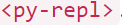

Python n'est rien d'autre que l'un des plus populaires langages de programmation. Cependant, sa renommée pourrait finir par se démarquer encore plus avec l'émergence de PyScript. C'est le nom d'un projet récemment lancé qui permet d'exécuter des scripts Python directement dans le navigateur, sur des pages HTML.
PyScript se présente différemment des autres méthodes qui parlent déjà au web. En effet, le projet s'exécute comme un serveur dont l'application génère une page en HTML et JavaScript. Son exclusivité est donc lorsqu'il propose d'exécuter des scripts Python dans le navigateur sans qu'un composant serveur ne soit nécessaire pour cela.
Dans les cas où il est nécessaire d'exécuter quelque chose en Python, PyScript peut accélérer le test de certains codes ou permettre l'exécution d'une application entière sur une page Web, par exemple.
il suffit de mettre le script Python dans une balise
Il y a aussi la balise : 
Ainsi, comme son nom l'indique, il crée un composant REPL (Read Eval Print Loop), qui a pour
fonction d'évaluer les instructions saisies par l'utilisateur et d'afficher le résultat.
La mention précédente de Pyodide n'est pas purement fortuite. Ce projet est une sorte de
convertisseur de code de CPython (une implémentation de Python en langage C) vers WebAssembly.
Ce dernier peut être compris ici comme un standard permettant d'écrire des applications web en
Python.
PyScript est donc un « framework pour créer des applications Python riches dans le navigateur ». Il permet d'imbriquer Python et HTML, fournit un accès complet au DOM et donne au code l'accès aux bibliothèques JavaScript, dans les deux sens. Le code Python peut appeler JavaScript ou être appelé par JavaScript. Ainsi, toute la logique et le code de l'application peuvent se trouver dans un seul langage, dans le navigateur, aucun serveur Web n'est nécessaire. Il est possible de mettre le fichier HTML sur une clé USB et le donner à un ami. Il est nécessaire de télécharger PyScript lui-même, mais cela se fait à partir du fichier HTML à l'aide de la balise <'script'> .